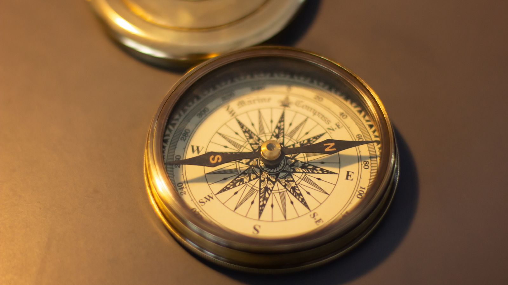

Boylam Sorunu: Marangoz Harrison ve Denizde Doğru Saat Arayışı
Okyanusun ortasında bir geminin nerede olduğunu bulmak, 18. yüzyılın başında Britanya’nın en pahalı bilimsel sorunlarından biriydi. Kuzey-güney konumunu, yani enlemi, bir denizci güneşin öğle yüksekliğinden çıkarabiliyordu. Doğu-batı konumu, yani boylam, ise başka bir şey gerektiriyordu: tam bir saat. Parlamento 1714’te bu sorunu çözene büyük para ödülü vaat etti ve ödülü kazanan kişi bir astronom ya da bir matematikçi olmadı. Kendi kendini yetiştirmiş bir marangoz çıktı. Bu yazı o hikâyeyi iki ana kaynakla anlatıyor: Greenwich’teki Kraliyet Müzeleri’nin (RMG) sayfası ve St Andrews Üniversitesi’nin matematik tarihi arşivi. Hikâyenin bildiğimiz hâlinden farklı çıkan yerlerini sonuna bıraktım.

Önce kavramlar
Yazıda geçen terimleri baştan toparlayayım.
- Enlem: bir yerin ekvatora göre kuzey ya da güneyde olması. Güneşin öğle yüksekliğinden ya da kutup yıldızından ölçülebilir.
- Boylam: bir yerin başlangıç meridyenine (bugün Greenwich’ten geçen hat) göre doğuda ya da batıda olması. Derece cinsinden ölçülür.
- Kronometre: denizde ve sıcaklık değişiminde bile çok az sapan, çok hassas taşınabilir saat. “Chronos” Yunancada “zaman” demek.
- Deniz mili (nautical mile) ve coğrafi mil: denizcilikte kullanılan uzunluk birimi. Kaynaklar bir derecelik boylamı “altmış coğrafi mil” olarak veriyor, yani kabaca bir dakikalık yay bir mil. Bu eşitlik ekvatorda geçerli.
- Ay mesafesi yöntemi (lunar distance): Ay’ın belirli yıldızlara olan açısını ölçüp bunu hazır tablolarla karşılaştırarak saati bulma yöntemi.
- Board of Longitude (Boylam Kurulu): ödül başvurularını değerlendirmek için kurulan resmî heyet.
Neden saat gerekiyor?
Dünya 24 saatte bir kez döndüğü için 360 dereceyi 24’e böldüğümde saatte 15 derece çıkıyor. Bu hesap benim, RMG sayfasında bu ilişki açıkça anlatılmıyor. Mantığı şu: gemide öğle vakti güneş tam tepeye geldiğinde elinizde başka bir yerin, mesela Londra’nın, saatini gösteren bir saat varsa ve o saat öğleden iki saat sonrasını gösteriyorsa, Londra’nın iki saat doğusundan geçmişsiniz demektir. İki saat, yani otuz derece. Demek ki boylamı bulmak için Londra saatini sağlam biçimde taşımak yeter.
18. yüzyılın başındaki sarkaçlı saatler karada çok iyi çalışıyordu, ama sarkaç gemide yalpada işe yaramıyordu. Sıcaklık, nem ve gemi sarsıntısı yağı, yayları, metalin boyunu değiştiriyordu. Bu bir mühendislik sorunuydu: dalgalı denizde, aylarca, günde birkaç saniyeden fazla sapmayan bir saat gerekiyordu.
Ödül yasası ve gerekçe
Sorunu yasaya taşıyan olay, MacTutor’un arşiv sayfasına göre 1707’de Scilly Adaları’nda yaşandı: Britanya’ya dönen dört savaş gemisi adaların kayalarına oturdu ve iki binden fazla denizci öldü. Sayfa, komutanın adını yazmıyor. Çarpışmanın doğrudan boylam hatasından kaynaklandığını mı yoksa başka bir nedenle mi olduğunu da yazmıyor. Yalnızca olayı, boylam sorununa verilen tepkinin sahnesi olarak anıyor.
Yasa 16 Haziran 1714’te çıktı. Üç kademe ödül öngörüyordu:
- £10.000Boylamı bir derece, yani altmış coğrafi mil içinde bulan yöntem için.
- £15.000Bu mesafenin üçte ikisi için (yaklaşık kırk mil).
- £20.000Bu mesafenin yarısı için (otuz mil, yani yarım derece).
Bu paranın ne anlama geldiğini bugünkü para cinsinden söyleyemiyorum, çünkü kaynaklarımda enflasyon karşılığı yok.
Marangoz Harrison
RMG sayfasına göre John Harrison kendi kendini yetiştirmiş bir marangozdu ve 1720’lerin ortasında yüksek hassasiyetli uzun kasalı saatler (longcase clock) yapıyordu. Sonra taşınabilir ve denizde çalışabilecek bir saat yapmaya yöneldi. Bu çalışmanın ilk ürünü H1’di.
H1’i 1736’da Lizbon’a giden bir yolculukta, Centurion gemisiyle gidip Orford gemisiyle dönerek denedi. Dönüşte saati, görünen burnun Lizard olduğunu, geminin sandığı gibi Start olmadığını kanıtlamasını sağladı. Burun yanlış tanınsaydı gemi tehlikeye girebilirdi. 1737’de Boylam Komiserleri Harrison’a 500 sterlin ödenmesinde anlaştılar ve bunun 250’si baştan verildi.
H2 iki yıl içinde tamamlandı ama hiç denize çıkmadı. Harrison onda temel bir kusur buldu. H3’ü 1740’ta başladı ve üzerinde 19 yıl çalıştı, istenen doğruluğa ulaşmak için çok değişiklik yaptı. H4 ise tamamen farklı çıktı. John Jefferys’in yaptığı bir cep saatinin yeni türdeki balansı etrafında kuruldu. Saniyede beş kez tık atıyordu.
İki deneme
H4 iki denemeden geçti. İlkinde 1761’de Harrison’ın oğlu William saati Jamaika’ya götürdü. RMG sayfasına göre William bu yolculukta saati kullanıp Madeira adasına beklenenden erken varılacağını doğru tahmin etti. MacTutor ise aynı yolculukta H4’ün tüm sefer boyunca beş saniye kaybettiğini yazıyor ve bunun ödül koşullarını karşıladığını söylüyor.
İkinci deneme, 28 Mart 1764’te Portsmouth’tan Barbados’a giden HMS Tartar gemisinde yapıldı. MacTutor’a göre H4 beş ayda 54 saniye kaybetti. Harrison’ın önceden belirlediği düzeltmeler uygulandığında hata 15 saniyeye düşüyordu. RMG’ye göre bu denemede H4 aynı zamanda ay mesafesi yöntemi ve Jüpiter’in uyduları üzerinden yapılan ölçümlerle karşılaştırıldı ve 1714 yasasının katı sınırlarında kaldı.
Bu rakamların neye karşılık geldiğini hesapladım. Dört dakikalık zaman farkı bir derece boylam eder (360 derece bölü 24 saat, saatte 15 derece, dolayısıyla derece başına 4 dakika). Yarım derece bu yüzden iki dakika, yani 120 saniye. En yüksek ödül için gereken hata bu sınırın altında olmalıydı. H4’ün Barbados’taki 54 saniyelik hatası bu sınırın altında kalıyor. Hesabın bu kısmı benim, kaynaklar “120 saniye” demiyor.
Neden ödül hemen verilmedi?
Kâğıt üzerinde Harrison kazanmıştı. Ama Boylam Kurulu ödemeyi isteksiz yaptı. RMG’ye göre Kurul, H4’ü gösterdiğinde 10.000 sterlin önerdi, diğer yarısını da başka saatçilerin benzer saatleri yapabileceğini göstermesine bağladı. Bu öneri 10 Mayıs 1765 tarihli bir yasaya dönüştü. Harrison kuralların kendisine karşı değiştirildiğini düşünüyordu.
MacTutor ayrıca Kurul ile Kraliyet Cemiyeti’nin 20.000 sterlini ödemeye isteksiz olduğunu, Harrison’ın parayı kral III. George’a başvurduktan sonra aldığını yazıyor. RMG ise onun sonunda “cömert bir tazminat” aldığını ama hak ettiğini düşündüğü her şeyi alamadığını söylüyor. İki cümle birbirini tamamlıyor ama aynı olay hakkında farklı düzeyde ayrıntı veriyor.
Nevil Maskelyne, o dönemin Astronomer Royal’ı (Kraliyet Astronomu), olayların merkezinde yer alıyor. 1761’de Prince Henry gemisiyle St Helena adasına gitti ve ay mesafesi yöntemini ve Tobias Mayer’in tablolarını Kurul adına denedi. MacTutor’a göre boylamın “her zaman bir derece içinde bulunabileceğini” savundu, bu Manş enleminde yaklaşık 40 coğrafi mile denk geliyor. 1764 Barbados denemesinde William Harrison, Maskelyne’nin tarafsız olmadığından şikâyet etti. Maskelyne hasta olduğu için gözlemlerin başkasınca yapılmasını istedi. 1766’da ise, RMG’ye göre, H4’ü Kraliyet Gözlemevi’nde on ay boyunca test etti ve saat kötü performans gösterdi. Harrison ile anlaşmazlık yeniden alevlendi.
Rakip yöntem: gökyüzü saati
Ay mesafesi yöntemi, saati taşımak yerine gökyüzünü bir saat gibi kullanmaya dayanıyordu. Bu bölümü anlatışım benim genel bilgim ve kaynakla doğrulanmadı: Ay, yıldızların arasında yavaş yavaş kayar. Birinin Ay ile belirli bir yıldız arasındaki açıyı ölçüp bunu önceden hesaplanmış tablolarla karşılaştırması, Greenwich’te şu anda saatin kaç olduğunu verir. Doğruluğu tablolara bağlıdır.
Kaynaklarımdaki parça şu: Alman astronom Tobias Mayer 1756’da ay tablolarını Boylam Kurulu’na gönderdi, savaş koşulları nedeniyle uygun deneme yapılamadı, 1762’de öldü ve dul eşi Kurul’dan 3.000 sterlin aldı. Astronom James Bradley, Harrison’ın “lanet saati” olmasa ödülün Mayer ile kendisi arasında bölüşüleceğini söylemiş. Alıntıyı MacTutor aktarıyor, ben orijinalini görmedim. Bu söz, yarışın yalnızca bilim içinde değil, adlar ve çıkarlar arasında olduğunu gösteriyor.
Saatlerin sonu: ucuzlama
RMG’ye göre erken deniz kronometreleri pahalıydı ve bu yüzden yayılmaları yavaş oldu. Sonraki saatçiler tasarımı basitleştirdi ve ucuzlattı, 1800’lerin başında kronometre yaygın biçimde kullanılır hâle geldi. Kâğıt üzerinde çözüm 1760’larda vardı ama deniz taşımacılığında rutin hâline gelmesi yaklaşık kırk yıl daha aldı. Bu aralık benim kaynaklardan çıkardığım yaklaşık bir sayı, sayfalarda “kırk yıl” diye bir ifade yok.
Harrison’ın saatlerinin dördü de hayatta. RMG’ye göre H2, H3 ve H4 Greenwich’teki Kraliyet Gözlemevi’nde sergileniyor, H1’in aslı ise koruma (konservasyon) çalışması altında. H1’in bir kopyası sergide.
Saniyeyi mile çevirmek
“54 saniye” ilk bakışta çok küçük bir rakam gibi duruyor ve gerçekten öyle. Neden öyle olduğunu görmek için hesabı mile çevirelim. Kaynaklara göre bir derece boylam altmış coğrafi mil. Bir derece dört dakika zaman demek, o hâlde bir dakika zaman on beş mil, bir saniye zaman çeyrek mil eder (yaklaşık 460 metre). Bu eşitlik yalnızca ekvatorda tutuyor, çünkü boylam çizgileri kutuplara yaklaştıkça birbirine yaklaşır ve derece başına mil azalır. Aşağıdaki sayılar bu yüzden “en fazla” anlamında okunmalı. Hesabın tamamı benim.
- 5 saniye (Jamaika, 1761)En fazla 1,25 mil.
- 15 saniye (Barbados, düzeltmeli)En fazla 3,75 mil.
- 54 saniye (Barbados, ham)En fazla 13,5 mil.
- 120 saniye (£20.000 sınırı)30 mil, yasanın kendi sınırı.
En kötü ihtimalle bile H4’ün hatası, yasanın en sıkı koşulunun dörtte birinden biraz fazlasıydı. Bir denizci için on üç mil, kıyıya yaklaşırken görüş mesafesinin çok ötesinde bir mesafe. Ama Scilly’deki gibi bir kazayı önlemek için yetiyor. Bu yorum benim, kaynaklar böyle bir sonuç yazmıyor.
İki yolculuğun sorduğu farklı sorular
İlk iki sayfayı karşılaştırınca Jamaika ve Barbados denemeleri farklı ölçütlerle anlatılıyor. Jamaika için MacTutor “tüm yolculukta beş saniye” diyor. RMG ise bu yolculuğun asıl önemini William Harrison’ın Madeira’ya erken varılacağını önceden söylemesine bağlıyor. Biri sayı veriyor, öteki olayı anlatıyor. Barbados için MacTutor beş ay ve 54 saniye veriyor, ardından Harrison’ın önceden bildirdiği düzeltmeyi uygulayınca 15 saniyeye iniyor. Bu düzeltmenin ne olduğu, nasıl hesaplandığı kaynaklarımda yok. “Önceden belirlenmiş düzeltme” saatin günlük sapmasının bilinmesi olabilir, ama bu benim tahminim.
Bunun neden önemli olduğunu kendi cümlemle söyleyeyim: bir saat tam doğru olmak zorunda değil, hatasının öngörülebilir olması yeterli. Saat her gün aynı miktarda geri kalıyorsa denizci bunu hesaba katabilir. Beş ay yaklaşık 150 gün, yani 54 saniye günde yaklaşık 0,36 saniyeye denk geliyor (beş ayı 150 gün aldığımda). Bu hesap yaklaşık, yolculuğun gün sayısını kaynaklar vermiyor.
Harrison’ın günümüzdeki izi
Bu hikâye bir müze eşyası olarak yaşıyor. RMG’nin sayfası H1’in bir kopyasının ve H2, H3, H4 saatlerinin aslının Kraliyet Gözlemevi’nde sergilendiğini yazıyor. Sayfaya göre H1’in aslı koruma çalışmasında. Bugünkü okuyucunun aklına belki şu gelir: boylamı bugün kim buluyor? Burada genel bilgimi kullanıyorum ve bu bilgi bu yazıdaki kaynaklarla doğrulanmadı: GPS (Global Positioning System, küresel konumlama sistemi) uydularındaki çok hassas saatlerin gönderdiği zaman işaretlerinin alıcıya ulaşma farkından konum hesaplıyor. İlke yine zaman. Dört yüz yıl önce bir gemide, bugün bir telefonda.
Bu hikâyede neyi bilmiyoruz?
Harrison’ın saatlerinin nasıl çalıştığını bu yazıda anlatmadım. H1, H2 ve H3’ün mekaniğini, H4’ün balansının ayrıntısını kaynaklarım vermiyor. Jefferys’in saatiyle bağlantının ne ölçüde bir ilham, ne ölçüde bir kopya olduğunu da bilmiyorum. RMG yalnızca H4’ün onun yaptığı bir saatin yeni tür balansı etrafında kurulduğunu söylüyor. Kurul’un üyelerini, kararların oy sayılarını ve Harrison’ın aldığı toplam parayı da okumadım. RMG “cömert” diyor, miktar vermiyor.
Kısa sorular, kısa cevaplar
Harrison ödülü tek seferde mi aldı? Hayır. RMG’ye göre 1737’de 500 sterlinlik bir anlaşma yapıldı ve 250’si baştan verildi. Sonraki ödemelerin tek tek tutarlarını kaynaklarım vermiyor. Büyük ödemeler 1765 yasasından sonra, uzun bir tartışmanın ardından geldi.
Neden H1 ve H2 yeterli olmadı? H1’in Lizbon seferi bir kanıttı, ama yolculuk kısaydı. H2 hiç denenmedi, çünkü Harrison onda temel bir kusur gördü. Kusurun ne olduğunu kaynaklarım söylemiyor. H3 üzerinde 19 yıl çalışılması, hedefin hem teknik hem de sabır işi olduğunu gösteriyor.
Ay mesafesi yöntemi başarısız mıydı? Kaynaklarımda böyle bir sonuç yok. Maskelyne 1761’de yöntemi ve Mayer’in tablolarını St Helena’da denedi ve boylamın bir derece içinde bulunabileceğini söyledi. Bu, yasanın en düşük ödül kademesinin sınırıyla (bir derece) örtüşüyor. Yöntem en alt kademeye yetiyordu, en üst kademeye değil. Bu karşılaştırma benim yorumum.
Kronometre neden hemen yayılmadı? RMG’ye göre erken kronometreler pahalıydı. Sonraki saatçiler tasarımı basitleştirip ucuzlattı ve 1800’lerin başında yaygınlaştı.
Hikâye “dâhi marangoz, kötü bilim insanları” kadar basit mi? Kaynaklarıma göre değil. Kurul Harrison’ın saatini ödüle uygun buldu ve kısmi ödeme önerdi. Harrison ise kuralların değiştirildiğini düşündü. Maskelyne’in tarafsızlığı tartışıldı, ama Maskelyne’in kendi sınadığı yöntem de ödülün alt kademesini karşılayacak düzeydeydi. İki tarafı da tek cümleyle yargılamak için elimdeki kaynaklar yetmiyor.
Hikâyeden ne çıkıyor?
Boylam sorununu çözenler arasında iki yaklaşım yarıştı: gökyüzünü saat yapmak ve saati gökyüzüne bırakmamak. Benim özetime göre birincisi matematik ve astronomi bilgisi, ikincisi saatçilik ustalığı gerektiriyordu. Kaynaklarımda uzun vadede hangisinin kazandığı ayrıntılı yer almıyor. Bildiğim kadarıyla kronometre ve ay mesafesi bir süre yan yana kullanıldı, ama bunu bu yazı için doğrulamadım. Yazının sonunda kaynakların hangi yerlerde farklı şey söylediğini ve neyi okumadığımı topladım.
Bu yazının sınırları
İki ana kaynağın (RMG ve MacTutor) yalnızca ilgili sayfalarını okudum, Dava Sobel’in Longitude kitabı gibi popüler kaynaklara ve Harrison’ın kendi yazılarına bakmadım. Kendi hesaplarım (saatte 15 derece, derece başına 4 dakika, yarım derece için 120 saniye, hatanın mil karşılığı) ilkokul düzeyinde aritmetik, ama kaynaklarda açıkça yazmıyor. Ay mesafesi yönteminin işleyişini anlatan paragraf benim genel bilgimdir ve doğrulanmamıştır. Scilly kazasının komutanının adı ve kazanın boylamla ilişkisi kaynaklarımda doğrulanmadı. Harrison’ın H1’den H4’e saatlerinin teknik ayrıntılarını (kanatlı çubuk sarkaç, bimetal şerit gibi) bu yazıya almadım, çünkü kaynak sayfalarda bu ayrıntı yok. 1765 yasasının kesin metnine bakmadım. Para birimi dönüşümü yok.
Kaynaklar çelişiyor
- 1761 Jamaika yolculuğuRMG, William Harrison’ın saatle Madeira’ya erken varılacağını doğru tahmin ettiğini yazıyor. MacTutor aynı yolculukta saatin beş saniye kaybettiğini yazıyor. İkisi çelişmiyor, ama farklı şeyler ölçüyorlar.
- Ödülün miktarıRMG, Kurul’un 10.000 sterlin önerdiğini ve ikinci 10.000’in başka saatçilerin benzerini yapabilmesine bağlı olduğunu söylüyor. MacTutor, Kurul’un 20.000 sterlini ödemekte isteksiz olduğunu yazıyor. İki anlatım aynı toplamı farklı çerçevelerde kuruyor.
- Ödülün alınışıMacTutor ödülün Harrison kralı araya sokunca alındığını söylüyor. RMG Harrison’ın “cömert bir tazminat” aldığını ama hak ettiğinin tamamını almadığını ekliyor.
- 1714 yasasının tarihiRMG yalnızca “1714 Boylam Yasası” diyor. MacTutor 16 Haziran 1714 veriyor.
- Maskelyne’in rolüMacTutor 1764’te Maskelyne’in hasta olduğunu ve gözlemlerin başkasınca yapılmasını istediğini yazıyor. RMG 1766’da Maskelyne’in saati Gözlemevi’nde on ay boyunca denediğini söylüyor. Bunlar iki ayrı olay, ama ikisini birlikte okuyunca Maskelyne’in tarafsızlığı konusundaki tartışmayı tam anlamıyla yeniden kuramıyorum.
- Euler’in payıBu yazı için bakılan MacTutor sayfasında Euler anılmıyor. Başka kaynaklarda anıldığını biliyorum, ama burada onaylanmadı, bu yüzden yazıya girmedi.
Başlıca kaynaklar: Royal Museums Greenwich, Harrison’s clocks and the longitude problem; MacTutor (St Andrews), The English attack on the Longitude Problem. Fotoğraf: Jaiju Jacob / Pexels (Pexels lisansı).
Veri notu: Yalnızca iki ana kaynak sayfası okundu. Saatte 15 derece, derece başına 4 dakika, saniyenin mil karşılığı ve 120 saniyelik sınır benim hesabımdır. Ay mesafesi yönteminin işleyişi, GPS bilgisi ve Harrison’ın saat mekaniğine dair sınırlı genel bilgi doğrulanmamıştır. Bu yazı bilgi amaçlıdır.